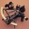

Native CSS feature detection via the @supports rule
Introduction
With browsers of varying degrees of standards support still in use for browsing the Web (from decent modern browsers, to old rustbuckets like IE6), we are pretty comfortable with the idea of sending different code to different browsers to provide different-but-still-acceptable user experiences. This is done in a variety of ways, but generally it relies on the rather error-prone browser detection, or the cleverer and more robust feature detection.
Feature detection is normally done by writing your own JavaScript to test if a fundamental property, method, etc. of the feature you are detecting exists or can be used, or by using a 3rd party feature detection library, such as the excellent Modernizr. Modernizr provides feature tests and mechanisms for selectively applying CSS and JavaScript based on the results of those tests, for a whole host of different HTML5 and CSS3 features.
This is really useful, but many people have asked if we are going to see native mechanisms for doing such feature tests. The good news is that we are already starting to do so! This article looks at the CSS @supports rule, part of the CSS3 Conditional Rules Module Level 3, which provides a perfect mechanism for selectively applying CSS based on feature support. Here we'll look at basic syntax, along with an applied example.
Note: @supports can currently be seen working across Opera 12.10 and Firefox Aurora; browsers that don't support @supports will just ignore the code inside those blocks completely. This means that it has some useful applications already, but if it doesn't suit your situation, you can stick to Modernizr for now.
@supports syntax
@supports takes the form of an at-rule block, which performs a test and then executes normal CSS rules placed inside the block depending on whether the test returns true or not. In this case, the test is always one or more CSS declarations, and the browser returns true if it supports the indicated declaration(s). For example:
@supports (display:flex) {
section { display: flex }
...
}The rules inside this block will be applied if the browser supports display: flex.
@supports also provides a not keyword for applying styles when features are not supported. You could provide some specific alternative styling for browsers that don't support display:flex like this:
@supports not (display: flex) {
// provide alternative layout
// with floats perhaps
}@supports also provides or and and keywords, for applying styles only if the browser passes two or more specific support tests, or if the browser passes one of a number of different support tests.
For example, Flexbox is only supported without prefixes in Opera (Mobile and Next) and IE10 preview. To test if the browser supports any of the necessary prefixed versions or the non-prefixed version, you could do this:
@supports (display: -webkit-flex) or
(display: -moz-flex) or
(display: flex) {
section {
display: -webkit-flex;
display: -moz-flex;
display: flex;
…
}
}For an and example, you might want to apply a multi-column layout and associated rules only when the unprefixed version of the column-width and column-span properties are supported, as browsers that support multi-col with prefixes currently don't support column-span, which limits its usefulness:
@supports (column-width: 20rem) and (column-span: all) {
div { column-width: 20rem }
div h2 { column-span: all }
div h2 + p { margin-top: 0; }
...
}The last thing to note about @supports syntax is that you are not allowed to mix and, or and not without using a layer of parentheses to make the precedence clear. So for example you might want to apply an animation involving a 3D transform to an element, ONLY if the browser supports both the animation and 3D transform:
@supports ((-webkit-animation-name: my-animation) and (-webkit-transform: rotate3D(1,2,4,90deg))) or
((-moz-animation-name: my-animation) and (-moz-transform: rotate3D(1,2,4,90deg))) or
((-ms-animation-name: my-animation) and (-ms-transform: rotate3D(1,2,4,90deg))) or
((-o-animation-name: my-animation) and (-o-transform: rotate3D(1,2,4,90deg))) or
((animation-name: my-animation) and (transform: rotate3D(1,2,4,90deg))) {
// add your funky animation here!
}A @supports example
To demonstrate a real world usage of @supports, I'm going to rewrite an example I first wrote for my book (Practical CSS3: develop and design) — a simple 3D rotating card flipper example that uses Modernizr to provide an alternative experience to browsers that don't support 3D transforms (like Opera, at the time of writing; we've got it in the pipeline!) or 2D transforms (I just apply a lot of left padding to the front of the card on hover to show the back.) You can view the Modernizr card flipper example running live, and see the difference between the experience for different support levels in Figures 1-3.
Figure 1: In browsers that do support 3D transforms the card flips over with a nice animation.
Figure 2: In browsers that don't support 3D transforms but do support 2D transforms, the front of the card moves over with a nice animation to reveal the back.
Figure 3: In browsers that don't support 3D or 2D transforms, the front of the card just moves to show the back with no animation.
In my Modernizr example, I am working backwards, providing fallback code for browsers that don't support 3D transforms, then providing a really basic experience for browsers that don't support 2D transforms either. In the @supports example, I work the other way around with more of progressive enhancement approach, first providing a really basic experience to show both sides of the business card that works in pretty much all browsers:
/* || For browsers that don't support 2D or 3D transforms */
#wrapper:hover #inner-wrapper #front, #wrapper:focus #inner-wrapper #front {
margin-left: -350px;
}Older browsers will just get to here, and then ignore everything inside the @supports rules.
Then we have a set of rules for browsers supporting 2D transforms:
/* || For browsers supporting 2D transforms */
@supports (-webkit-transform: rotate(-30deg)) or
(-moz-transform: rotate(-30deg)) or
(-ms-transform: rotate(-30deg)) or
(-o-transform: rotate(-30deg)) or
(transform: rotate(-30deg)) {
#inner-wrapper #front {
-webkit-transition: 0.8s all ease-in;
-moz-transition: 0.8s all ease-in;
-ms-transition: 0.8s all ease-in;
-o-transition: 0.8s all ease-in;
transition: 0.8s all ease-in;
}
#wrapper:hover #inner-wrapper #front, #wrapper:focus #inner-wrapper #front {
margin-left: 0;
-webkit-transform: rotate(-30deg) translate(-50%,-100%);
-moz-transform: rotate(-30deg) translate(-50%,-100%);
-ms-transform: rotate(-30deg) translate(-50%,-100%);
-o-transform: rotate(-30deg) translate(-50%,-100%);
transform: rotate(-30deg) translate(-50%,-100%);
}
}and finally, a set of rules for browsers supporting 3D transforms:
/* || For browsers supporting 3D transforms */
@supports (-webkit-transform: rotateX(0deg)) or
(-moz-transform: rotateX(0deg)) or
(-ms-transform: rotateX(0deg)) or
(-o-transform: rotateX(0deg)) or
(transform: rotateX(0deg)) {
#front, #back {
-webkit-backface-visibility: hidden;
-moz-backface-visibility: hidden;
-ms-backface-visibility: hidden;
-o-backface-visibility: hidden;
backface-visibility: hidden;
}
#front {
-webkit-transform: rotateX(0deg);
-moz-transform: rotateX(0deg);
-ms-transform: rotateX(0deg);
-o-transform: rotateX(0deg);
transform: rotateX(0deg);
}
#back {
-webkit-transform: rotateX(180deg);
-moz-transform: rotateX(180deg);
-ms-transform: rotateX(180deg);
-o-transform: rotateX(180deg);
transform: rotateX(180deg);
}
#wrapper:hover #inner-wrapper, #wrapper:focus #inner-wrapper {
-webkit-transform: rotateX(180deg);
-moz-transform: rotateX(180deg);
-ms-transform: rotateX(180deg);
-o-transform: rotateX(180deg);
transform: rotateX(180deg);
}
#wrapper:hover #inner-wrapper #front, #wrapper:focus #inner-wrapper #front {
-webkit-transform: none;
-moz-transform: none;
-ms-transform: none;
-o-transform: none;
transform: none;
}
}See the @supports card flipper example running live.
window.supportsCSS();
Opera 12.10 is currently the only browser to support @supports' corresponding JavaScript API, which allows you to run code conditionally depending on whether the browser supports a given CSS feature. For example, here's my initial simple example rewritten for JavaScript:
var flexy = window.supportsCSS('display:flex');
if(flexy) {
alert('I support Flexbox!');
}In the spec, you'll see that the syntax is listed as CSS.supports, not window.supportsCSS. This is because we implemented a slightly older version of the spec, plus we were worried about the site compatibility implications of an object called CSS in the global namespace. What is eventually settled upon remains to be seen.
Summary
And so draws to a close our study of @supports! This feature is really interesting, as you can be so precise with the feature detection and CSS delivery you are implementing. One problem is of course, the fact that older browsers you will want to deliver alternative styling to won't support @supports, but it still has uses now. In any case, we hope the was a useful exploration, and we expect this feature to become a lot more useful in the future. Let us know what you think of the idea, by giving your feedback on the comments of this article, or on the www-style list.
Chris Mills

Chris Mills is a web technologist, open standards evangelist and education agitator, currently working at Opera Software in the developer relations team. He spends most of his time writing articles about web standards for dev.opera.com and other publications (such as .net mag and A List Apart), giving talks at universities and industry conferences, and lobbying universities to improve their web education courses. He believes that education is the answer to everything, but in particular he is passionate about using education to improve the overall content quality, accessibility, usability and future-viability of the Web.
He is the creator of the Opera Web standards curriculum, contributor to the WaSP InterACT project, and coauthor of InterACT with web standards: A Holistic Approach to Web Design. In August 2011, he also accepted the position of co-chair of the newly-formed Web Education Community Group.
Outside work he is a heavy metal drummer, proud father of three and lover of good beer.
This article is licensed under a Creative Commons Attribution 3.0 Unported license.
Comments
-

Personally I think this could be very useful. Just write down you css starting from the minimal feature/layout requirement and add things depending on browser's support!
-

Will browsers that don't support the @support syntax actually ignore or try to apply the code inside the curly brackets ?
-

Can "not" come after an "or" or an "and" keyword?
-

@dahulevogyre good point - non-supporting browsers ignore @supports blocks. I have updated the wording to reflect this better.
-
Once again, Opera leaps above other browsers with early support for this feature.
-

Nope, hadn't tried it. Hadn't heard about this until this article ... really wish this was implemented when CSS was first created. Would have made life much easier.
-

I tried to use the javascript API but it seems the syntax in the example is incorrect. The function window.supportsCSS needs two parameters instead of one, being the second one the value of the CSS property.
-
Mozilla just added a similar (although differently named) JS API:
No new comments accepted.ninjatux2k
Wednesday, November 21, 2012
Really cool, I wasn't aware of this
dahulevogyre
Wednesday, November 21, 2012
If they ignore it, you should state it in your introduction note, imo. Because, if so, I can start using @support now. Current browsers (other than Opera) will just render things as if they don't support the features I test. It may be perfectly fine for my uses cases. (ie. if I only test for features that are only in Opera; or if I'm ok with providing the basic version to other UAs, and thus put pressure on their developers)
The note makes me think it's not a backward compatible syntax.
POWRSURG
Wednesday, November 21, 2012
Chris Mills
Wednesday, November 21, 2012
@POWRSURG Good question - I've not tested that! Have you tried it? I can do a test later this week, when I get the chance.
Ahmad Alfy
Thursday, November 22, 2012
Gotta test that :D
POWRSURG
Thursday, November 22, 2012
Alex Fernández
Tuesday, November 27, 2012
I made a quick jsfiddle to test it http://jsfiddle.net/DSdsz/
MyOpera team, please fix this!
Friday, December 28, 2012
https://plus.google.com/115203843155141445032/posts/eZWWfoCfg1v